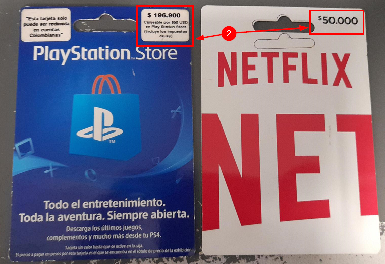
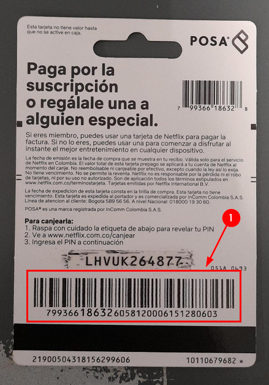

Ventas de Contenido es un canal por el cual se venden servicios de terceros tales como telefonia, streaming y membresias entre otras. El proceso consiste en indicarle al POS el PLU asociado al servicio (representado en tarjetas):
Tarjetas de MembresíaCódigo de barras de la tarjeta
Seguidamente se escanea el código de barras de la tarjeta (1). En la mayoria de casos, las tarjetas cuentan con un valor asignado de recarga (2) con excepcion de algunas tarjetas de telefonia que si permiten agregar un valor de recarga indefinido.
El POS envia la informacion al autorizador y este puede responder:
Aceptando la intención de activación: En caso de aceptación, el servicio no queda recargado hasta que no se confirma el pago de la tarjeta.(revisar) Este pago se puede realizar por cualquier tipo de medio dispuesto para ello.
Rechazando la intencion de activación: En caso de rechazo, el POS muestra un mensaje genérico de rechazo.(revisar)
Implementacion de soluciones que escalan la funcionalidad del POS
Dominio: Es escalable y permite la integreacion de varias soluciones
Persistencia manejada con BBDD
Comunicacion de comunicaciones propias (Servidor de Aplicaciones)
Framework: Enfocada en un tipo de soluciones especificas... no permitia la escalabilidad por su complejidad.
Venta: Es la venta de un PLU. Lon ingreso proviene del ejercicio del negocio.
Pago: Es el movimiento de dinero en ambas direcciones que pueden tener o no relacionados un PLU. Los ingresos se dan por el movimiento de dinero.
Operación No Venta: Operaciones que no generan ingresos.
Persistencia acoplado a TOSHIBA (Archivos KEYED)
Comunicación mediante PAF
¿Cual es la filosofia en la migración... que se pretende mejorar?
Escalabilidad
Persistencia
Comunicación
Mantenibilidad
¿Han habido intentos anteriores de migración y si ha sido asi en que han fallado?
Ya se han migrado servicios de manera completa
Otras aun existen en Framework por falta de tiempo/recursos
Tarjetas Regalo y Convenios existen en ambas arquitecturas (hibrido)
¿Hay lineamientos en la migracion actualmente?
Que tipo de producto se desea migrar (reglas de negocio)
¿Homologos de componentes entre arquitecturas (Ej HCH's)?
¿Hay módulo de activación? - ¿Se permite reversar la compra despues del pago?
¿Cuales son los servicios que se venden en los puestos de pago?
Netflix
PSStore
Xbox
Recarga a operadores de telefonia (distintos a Movil Exito)
¿Los atributos de configuracion se deben externalizar? (por fuera de la compilación)
¿Qué componente de BASIC empuja la ejecución de ventaContenido?
uefrwmod
uefrwmo2
uefrmo3
¿Qué es Electronic Journal?
¿Qué es TLog?
¿Qué es Middleware?
Es el componente que se encarga de redireccionar las peticiones hacia framework o Dominio
¿Qué es Middleware Cloud?
¿Qué es Interface?
Es el encargado de interpretar el mensaje recibido via Middleware desde BASIC y enviarlo al Director
¿Qué es DataEntry?
Es un conjunto de subgrupos que se encargan de marcar un item con unas caracteristicas que desencadenan flujos especiales al momento de la venta y pago. Por ejemplo la venta de una tarjeta de Netflix.
¿Qué son CallJavaBasic?
Es el protocolo de comunicación usado actualmente para transferir información entre BASIC y JAVA.
¿Qué diferencia Pago, Venta y No Venta?Venta es la intención de compra de un item por parte de un cliente y que afecta tantos los inventarios como el flujo de dinero de ls compañia
No Venta es la operación que no afecta los inventarios de la compañia y presta el servicio de un tercero como son las recargas, lo giros, las apuestas, etc.
Pago es el último paso que cierra la transacción y asienta la venta de un item.
¿La comunicacion va a ser ISO o HTTP?
Tareas
revisar la arquitectura actual (framework)
Entender el flujo del proceso y la relación de componentes
revisar la arquitectura a implementar (dominio)
consultar migraciones previas
Solicitar ambiente
Si es relevante, conocer los PLU de los servicios ofrecidos
Revisar componentes de producción
Mis Notas
ISOService: componente del lado del Dominio para manejar las tramas ISO8583
JSON con capa de seguridad
Operaciones
Pagos
Ventas
Intercambio de medio de pago
Eventos
Objeto POSTransaction: Estandar de todos los productos del negocio. Es decir, que atributos hacen parte de cada transaccion dependiendo el producto.
Orden jeraquico:
VentaContenidos.jar (bp)
FrameworkContenidosPagos.jar (platform)
Reportes.jar, Persist.jar o Presentacion.jar (libs)
Desarrollar casos de prueba para verificar el funcionamiento correcto de cada componente migrado. (QA)
Ejecutar pruebas unitarias para identificar y corregir posibles problemas. (IDEAL)
Validación de la integridad de los datos migrados/generados:
Verificar que los datos migrados sean consistentes y precisos.
Realizar pruebas integración. (QA)
Observar el rendimiento:
Monitorear el rendimiento del servicio en términos de eficiencia y resiliensia.
Ajustes (Refactory).
Observar la escalabilidad:
Enfoque a principio Open-Close.
Realizar pruebas de carga y estrés para medir la capacidad de escalabilidad del sistema. (IDEAL)
Etapa posterior a la migración
Documentación:
Registrar todos los cambios realizados durante el proceso de migración ademas de actualizaciones de código, configuraciones y otros cambios relevantes.
Realizar pruebas finales (Aseg. Calidad) y monitorear el funcionamiento del sistema (Piloto) (QA)
Evaluar el éxito de la migración en relación con los objetivos definidos
Ajustes y refactorización:
Realizar ajustes adicionales o refactorización del sistema migrado en base a la retroalimentación y los resultados obtenidos.
Corregir posibles errores o deficiencias identificadas durante la etapa de pruebas.
{kind=link}
{kind=link}
{kind=link}
{kind=link}
{kind=link}